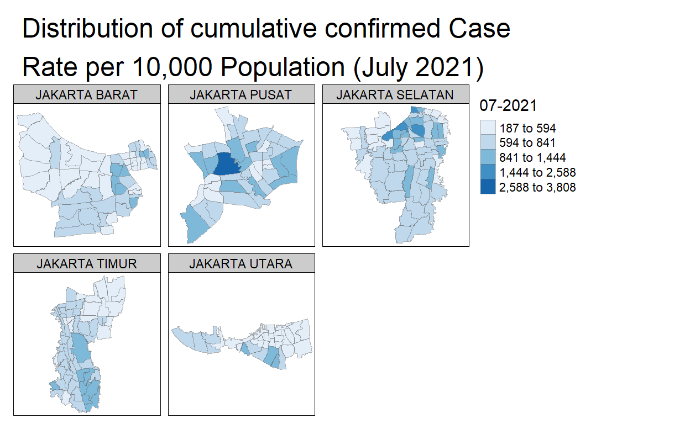
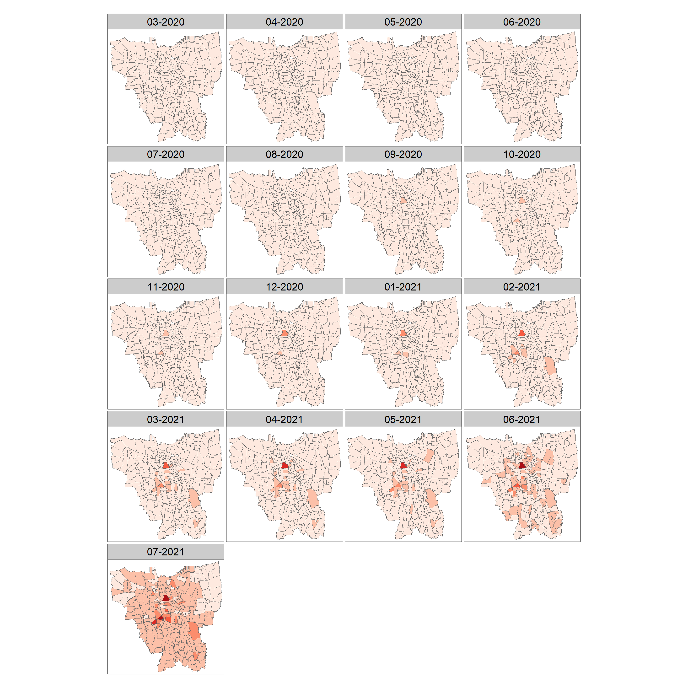
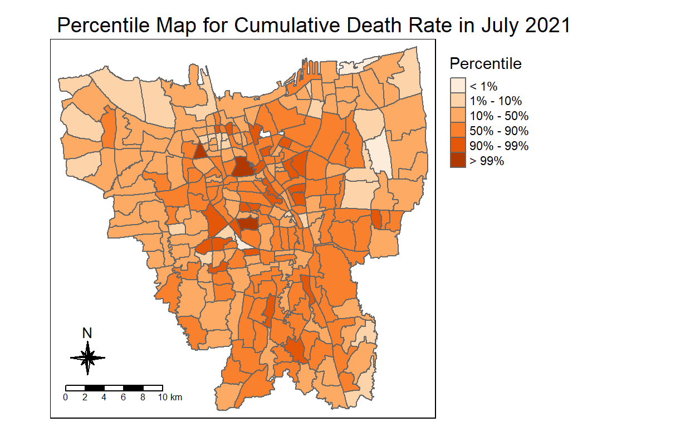

1. Introduction
This analysis aims to analyse and visualise spatio-temporal patterns of COVID-19 in DKI Jakarta, Indonesia. Out of 34 provinces in Indonesia, DKI Jakarta was the province affected most by the pandemic, with close to 24% of cumulative confirmed cases. However, the cumulative confirmed cases were not evenly distributed, therefore this analysis intends to unravel which sub-districts had the highest number of cases and how time has changed the overall distribution.
1.1 The Data
For this analysis, the following data are used:
Open Data Covid-19 Provinsi DKI Jakarta. This portal provides daily update of COVID-19 measures at both sub-district and district level. For the purpose of this analysis, data at the sub-district level is used. The datasets are in .CSV format, and monthly datasets from March 2020 to July 2021 will be used.
Indonesia Geospatial. This portal provides a comprehensive collection of geospatial data mainly in ESRI shapefile format at different geographical levels. For the purpose of this analysis, the Shapefile (SHP) Batas Desa Provinsi DKI Jakarta provided at PODES 2019 geospatial layer is used.
P.S. For Open Data Covid-19 Provinsi DKI Jakarta, March 2020 Dataset only started from 25 March 2020 as per the source, so the dataset might not be a true representative of March 2020. Similarly for January 2021 Dataset, 30 January 2021 is the most updated data, the link to access 31 January 2021 is broken so this may not be a true representation of January 2021.
2. Setting up the environment
To begin the study, R packages will be used for efficiency and a more comprehensive analysis, such as tidyverse and sf etc.
load("THE1_workspace.Rdata")
packages = c("tidyverse", "sf", "readxl", "readr", "stringr", "tmap", "lemon", "formatR")
for (p in packages) {
if (!require(p, character.only = T)) {
install.packages(p)
}
library(p, character.only = T)
}
3. Data Wrangling
3.1 Aspatial Data
3.1.1 Importing and creating a list
Datasets will now be imported into Rstudio.
list.files function helps to create a list from the imported data files. The files are also imported all at once using a pattern to match the file names, ensuring full efficiency as compared to importing the files individually.
The R function lapply is also complementary for this process, as well as adding the file names as an additional column to the dataframes (So as to display the data by month later on).
file_list <- list.files(path = "data/the1data/COVID-DATA", pattern = "*.xlsx", full.names = T)
df_list <- lapply(seq_along(file_list), function(x) transform(read_xlsx(file_list[x]),
MonthYear = file_list[x]))
3.1.2 Looking through the data and initial data cleaning
From here we then manually check through df_list to find which Meninggal(english translation: Deaths) column is the correct one for each file, for referencing the coalesce process later on in the next few steps (E.g. For February 2021, Meninggal1 is the correct column to use since it is the Meninggal column with no NA values.)
The inspection tells us that Meninggal23 to Meninggal25 is not used so we can skip those columns later on in the coalesce process.
df_list

3.1.3 Combine df_list into a dataframe
We will then combine df_list into a real dataframe using Idlpy function from the plyr package.
3.1.4 Conversion of data types for certain columns
To combine/integrate values from the various Meninggal columns, we will have to convert Meninggal26 columns data type so we can use coalesce function later on (because it originally is a chr type and chr type cannot combine with double type).
July 2020 is using Meninggal26 as the correct column, so we have to carry out the conversion.
df$Meninggal...26 = as.double(df$Meninggal...26)
df <- df %>%
na_if("N/A")
3.1.5 Coalesce process for NA/missing values
In this step we aim to combine ID_KEL into one main column, since some of the files have different layouts, which led to NA values in some rows. Coalesce is a function to take in values from another column (So if ID_KEL has NA values while ID_KEL1 has values, we will take from ID_KEL1 and add them into ID_KEL)
df <- df %>%
mutate(ID_KEL = coalesce(ID_KEL, ID_KEL...1, ID_KEL...2))
Similarly, we want to combine Meninggal together as one column, since some of the files have different layouts. We know that only Meninggal 28,29,30,31 is used after checking the datasets earlier on during df_list, so we will only integrate those columns together.
df <- df %>%
mutate(Meninggal = coalesce(Meninggal, Meninggal...28, Meninggal...29, Meninggal...30,
Meninggal...31, Meninggal...26))
3.1.6 Subsetting the necessary columns from dataframe
Next, we will get only the required columns out from the dataframe.
So df2 is the modified dataframe, and currently this is the output. lemon_print from lemon R Package is used for a more aesthetically pleasing dataframe.
head(df2)
| MonthYear | ID_KEL | Nama_provinsi | nama_kota | nama_kecamatan | nama_kelurahan | POSITIF | Meninggal |
|---|---|---|---|---|---|---|---|
| data/the1data/COVID-DATA/Standar Kelurahan Data Corona (28 Februari 2021 Pukul 10.00).xlsx | NA | NA | NA | NA | TOTAL | 339735 | 5478 |
| data/the1data/COVID-DATA/Standar Kelurahan Data Corona (28 Februari 2021 Pukul 10.00).xlsx | 3172051003 | DKI JAKARTA | JAKARTA UTARA | PADEMANGAN | ANCOL | 834 | 9 |
| data/the1data/COVID-DATA/Standar Kelurahan Data Corona (28 Februari 2021 Pukul 10.00).xlsx | 3173041007 | DKI JAKARTA | JAKARTA BARAT | TAMBORA | ANGKE | 617 | 8 |
| data/the1data/COVID-DATA/Standar Kelurahan Data Corona (28 Februari 2021 Pukul 10.00).xlsx | 3175041005 | DKI JAKARTA | JAKARTA TIMUR | KRAMAT JATI | BALE KAMBANG | 755 | 15 |
| data/the1data/COVID-DATA/Standar Kelurahan Data Corona (28 Februari 2021 Pukul 10.00).xlsx | 3175031003 | DKI JAKARTA | JAKARTA TIMUR | JATINEGARA | BALI MESTER | 358 | 8 |
| data/the1data/COVID-DATA/Standar Kelurahan Data Corona (28 Februari 2021 Pukul 10.00).xlsx | 3175101006 | DKI JAKARTA | JAKARTA TIMUR | CIPAYUNG | BAMBU APUS | 870 | 13 |
3.1.7 Cleaning up MonthYear column so as to sort the values by month
As shown above, we will need to clean up the MonthYear column as it is very messy. We will clean up the MonthYear column using str_replace function, to replace unnecessary characters in the values.
df2 <- df2 %>%
mutate_at("MonthYear", str_replace, "data/the1data/COVID-DATA/Standar Kelurahan Data Corona",
"")
df2 <- df2 %>%
mutate_at("MonthYear", str_replace, "[(]", "")
df2 <- df2 %>%
mutate_at("MonthYear", str_replace, "[)]", "")
df2 <- df2 %>%
mutate_at("MonthYear", str_replace, ".xlsx", "")
We will then turn MonthYear column into date data type using Sys.setlocale and as.Date functions.
Sys.setlocale(locale = "ind")
[1] "LC_COLLATE=Indonesian_Indonesia.1252;LC_CTYPE=Indonesian_Indonesia.1252;LC_MONETARY=Indonesian_Indonesia.1252;LC_NUMERIC=C;LC_TIME=Indonesian_Indonesia.1252"Next, we will remove any wrong/unnecessary rows (NA values in ID_KEL, subdistrict name as rows in ID_KEL column etc).
Then, sorting the modified dataframe by MonthYear and resetting of index.

3.1.8 Exporting .rds files out from the final dataframe
With all the data cleaning done, we will end out with writing out a .rds file from final_df and utilising it further on in the analysis, so as to ensure minimum data storage space.
aspatial_df <- write_rds(final_df, "data/the1data/rds/aspatial_df.rds")
aspatial_df <- read_rds("data/the1data/rds/aspatial_df.rds")
3.2 Geospatial Data
3.2.1 Importing shapefile data into a simple feature dataframe
The following code cunk imports the DKI Jakarta geospatial data into R as a simple feature dataframe.
geospatial_df <- st_read(dsn = "data/the1data/BATAS DESA DESEMBER 2019 DUKCAPIL DKI JAKARTA",
layer = "BATAS_DESA_DESEMBER_2019_DUKCAPIL_DKI_JAKARTA")
Reading layer `BATAS_DESA_DESEMBER_2019_DUKCAPIL_DKI_JAKARTA' from data source `C:\teojp3\IS415_blog\data\the1data\BATAS DESA DESEMBER 2019 DUKCAPIL DKI JAKARTA'
using driver `ESRI Shapefile'
Simple feature collection with 269 features and 161 fields
Geometry type: MULTIPOLYGON
Dimension: XY
Bounding box: xmin: 106.3831 ymin: -6.370815 xmax: 106.9728 ymax: -5.184322
Geodetic CRS: WGS 843.2.2 Checking and ensuring Projected Coordinates Systems of the data is correct
st_crs(geospatial_df)
Coordinate Reference System:
User input: WGS 84
wkt:
GEOGCRS["WGS 84",
DATUM["World Geodetic System 1984",
ELLIPSOID["WGS 84",6378137,298.257223563,
LENGTHUNIT["metre",1]]],
PRIMEM["Greenwich",0,
ANGLEUNIT["degree",0.0174532925199433]],
CS[ellipsoidal,2],
AXIS["latitude",north,
ORDER[1],
ANGLEUNIT["degree",0.0174532925199433]],
AXIS["longitude",east,
ORDER[2],
ANGLEUNIT["degree",0.0174532925199433]],
ID["EPSG",4326]]From the above output, we see that the Projected Coordinates System is WGS84 which is wrong, therefore well Change the Projected Coordinates Systems to DGN95 (which is the national Projected Coordinates Systems of Indonesia).
jakarta_DGN95 <- st_transform(geospatial_df, 23845)
3.2.3 Excluding the outer islands from the sf dataframe
Outer Islands are also known as Kepulauan Seribu, we will exclude them as they are detached from the mainland.
jakarta_DGN95 <- subset(jakarta_DGN95, KAB_KOTA != "KEPULAUAN SERIBU")
3.2.4 Subsetting necessary columns from the sf dataframe
For the analysis, we will only keep the first nine fields, whereby the last field is JUMLAH_PEN (Total Population).
jakarta_DGN95 <- jakarta_DGN95[, 0:9]

3.2.5 Data cleaning and amended some inaccuracies between the datasets
Some inaccuracies in the data were discovered between identification keys from aspatial and geospatial after manually checking through their data. Therefore, necessary amendments were made to the data.
If data cleaning process is not done, there will be data missing from some states (Plotted maps will have missing values).
jakarta_DGN95$DESA_KELUR[jakarta_DGN95$DESA == "BALEKAMBANG"] <- "BALE KAMBANG"
jakarta_DGN95$DESA_KELUR[jakarta_DGN95$DESA == "HALIM PERDANA KUSUMA"] <- "HALIM PERDANA KUSUMAH"
jakarta_DGN95$DESA_KELUR[jakarta_DGN95$DESA == "JATIPULO"] <- "JATI PULO"
jakarta_DGN95$DESA_KELUR[jakarta_DGN95$DESA == "KALIBARU"] <- "KALI BARU"
jakarta_DGN95$DESA_KELUR[jakarta_DGN95$DESA == "KRAMATJATI"] <- "KRAMAT JATI"
jakarta_DGN95$DESA_KELUR[jakarta_DGN95$DESA == "PALMERIAM"] <- "PAL MERIAM"
jakarta_DGN95$DESA_KELUR[jakarta_DGN95$DESA == "PINANGRANTI"] <- "PINANG RANTI"
jakarta_DGN95$DESA_KELUR[jakarta_DGN95$DESA == "PAL MERAH"] <- "PALMERAH"
jakarta_DGN95$DESA_KELUR[jakarta_DGN95$DESA == "TENGAH"] <- "KAMPUNG TENGAH"
jakarta_DGN95$DESA_KELUR[jakarta_DGN95$DESA == "PULOGADUNG"] <- "PULO GADUNG"
jakarta_DGN95$DESA_KELUR[jakarta_DGN95$DESA == "KALI DERES"] <- "KALIDERES"
jakarta_DGN95$DESA_KELUR[jakarta_DGN95$DESA == "RAWAJATI"] <- "RAWA JATI"
jakarta_DGN95$DESA_KELUR[jakarta_DGN95$DESA == "KRENDANG"] <- "KERENDANG"
The below code chunk is to help us check if the identifier keys between the aspatial and geospatial data are correct.
3.2.6 Removing NA value rows from dataframe
We will drop NA value rows, as they will affect our analysis results.
P.S. 2 sub-districts (DANAU SUNTER and DANAU SUNTER DLL) will be dropped through this process as most of their values fall under NA values, only their OBJECT_ID and Sub-district names were present, population data and positive cases data were missing/NA.
jakarta_DGN95 <- jakarta_DGN95 %>%
drop_na(OBJECT_ID)
3.3 Geospatial Data Integration
3.3.1 Data preparation for Cumulative Case Rate by month (per 10,000 Population)
Functions from various packages will be used: e.g.pivot_wider() of tidyr package and group_by of dplyr package.
The formula we are using is:
COVID-19 Case Rate per 10,000 population (Monthly) = (Total Cumulative Cases / Total Population) x 10000Case_Rate <- aspatial_df %>%
inner_join(jakarta_DGN95, by = c(nama_kelurahan = "DESA_KELUR")) %>%
group_by(nama_kelurahan, MonthYear) %>%
dplyr::summarise(Covid_Cases_Per_10000_Pop = ((sum(POSITIF)/JUMLAH_PEN) * 10000)) %>%
ungroup() %>%
pivot_wider(names_from = MonthYear, values_from = Covid_Cases_Per_10000_Pop)
3.3.2 Data preparation for Cumulative Death Rate by month (per 10,000 Population)
Functions from various packages will be used: e.g.pivot_wider() of tidyr package and group_by of dplyr package.
The formula we are using is:
COVID-19 Death Rate per 10,000 population (Monthly) = (Total Cumulative Deaths / Total Population) x 10000Death_Rate <- aspatial_df %>%
inner_join(jakarta_DGN95, by = c(nama_kelurahan = "DESA_KELUR")) %>%
group_by(nama_kelurahan, MonthYear) %>%
dplyr::summarise(Death_Rate_Per_10000 = ((sum(Meninggal)/JUMLAH_PEN) * 10000)) %>%
ungroup() %>%
pivot_wider(names_from = MonthYear, values_from = Death_Rate_Per_10000)
3.3.3 Data Preparation for Relative Risk mapping (with regards to Cumulative Death Rate)
Preparing another dataframe Positive_Cases to join Death_Rate dataframe in the upcoming processes, to add the additional columns needed for relative risk mapping later on (E.g. POSITIF and Meninggal).
Positive_Cases <- aspatial_df %>%
select("MonthYear", "nama_kelurahan", "POSITIF", "Meninggal")
Positive_Cases <- Positive_Cases[Positive_Cases$MonthYear == "2021-07-31", ]
Positive_Cases dataframe will now be integrated within Death_Rate dataframe.
3.3.4 Renaming the columns for both dataframes for easier identification during analysis
The columns will be renamed and simplified for easier identification, such as removing Date value from the MonthYear values (e.g.2021-02-28 into 02-2021).
colnames(Case_Rate) <- c("SUB_DISTRICT", "03-2020", "04-2020", "05-2020", "06-2020",
"07-2020", "08-2020", "09-2020", "10-2020", "11-2020", "12-2020", "01-2021",
"02-2021", "03-2021", "04-2021", "05-2021", "06-2021", "07-2021")
colnames(Death_Rate) <- c("SUB_DISTRICT", "POSITIVE_CASES", "DEATHS", "03-2020",
"04-2020", "05-2020", "06-2020", "07-2020", "08-2020", "09-2020", "10-2020",
"11-2020", "12-2020", "01-2021", "02-2021", "03-2021", "04-2021", "05-2021",
"06-2021", "07-2021")
3.3.5 Additional data cleaning to ensure cleaned data is used for analysis
A simple code chunk to quickly check and ensure there are no NA values.
Death_Rate dataframe is found to have NA rows, therefore we deleted them using na.omit() function.
3.3.6 Exporting .rds files and using them for efficient data storage
Rds files are used as a form of best practice, so as to lessen the amount of data storage for the required data.
Case_Rate_rds <- write_rds(Case_Rate, "data/the1data/rds/Case_Rate_rds.rds")
Death_Rate_rds <- write_rds(Death_Rate, "data/the1data/rds/Death_Rate_rds.rds")
Case_Rate_rds <- read_rds("data/the1data/rds/Case_Rate_rds.rds")
Death_Rate_rds <- read_rds("data/the1data/rds/Death_Rate_rds.rds")
Visualisation of Case_Rate_Rds
Visualisation of Death_Rate_Rds
4. Geospatial Analysis
4.1 Data Preparation for Mapping
4.1.1 Joining Geospatial data (jakarta_DGN95) with Aspatial data (Case Rate and Death Rate)
left_join of dplyr is used to join the geospatial data and attributes from the aspatial data using the names of sub-districts as a common identifier (DESA_KELUR for jakarta_DGN95, and SUB_DISTRICT for Case/Death_Rate_rds)
Taking a look at the Finalised Dataframes
head(Case_Rate_Final)
Simple feature collection with 6 features and 26 fields
Geometry type: MULTIPOLYGON
Dimension: XY
Bounding box: xmin: -3627698 ymin: 689029.1 xmax: -3619528 ymax: 693390.8
Projected CRS: DGN95 / Indonesia TM-3 zone 54.1
OBJECT_ID KODE_DESA DESA KODE PROVINSI KAB_KOTA
1 25477 3173031006 KEAGUNGAN 317303 DKI JAKARTA JAKARTA BARAT
2 25478 3173031007 GLODOK 317303 DKI JAKARTA JAKARTA BARAT
3 25397 3171031003 HARAPAN MULIA 317103 DKI JAKARTA JAKARTA PUSAT
4 25400 3171031006 CEMPAKA BARU 317103 DKI JAKARTA JAKARTA PUSAT
5 25390 3171021001 PASAR BARU 317102 DKI JAKARTA JAKARTA PUSAT
6 25391 3171021002 KARANG ANYAR 317102 DKI JAKARTA JAKARTA PUSAT
KECAMATAN DESA_KELUR JUMLAH_PEN 03-2020 04-2020 05-2020
1 TAMAN SARI KEAGUNGAN 21609 0.0000000 1.388310 1.851081
2 TAMAN SARI GLODOK 9069 1.1026574 2.205315 2.205315
3 KEMAYORAN HARAPAN MULIA 29085 0.6876397 3.782018 5.501117
4 KEMAYORAN CEMPAKA BARU 41913 0.0000000 3.101663 7.157684
5 SAWAH BESAR PASAR BARU 15793 1.2663838 10.131071 14.563414
6 SAWAH BESAR KARANG ANYAR 33383 0.0000000 2.396429 5.391966
06-2020 07-2020 08-2020 09-2020 10-2020 11-2020
1 2.776621 8.792633 27.766209 66.63890 84.68694 102.27220
2 2.205315 6.615944 8.821259 31.97706 47.41427 61.74881
3 10.658415 24.755028 44.352759 63.60667 92.48754 109.33471
4 12.168062 22.904588 44.139050 63.70339 103.30924 128.36113
5 11.397455 16.462990 38.624707 93.71240 116.50731 138.03584
6 11.383039 16.475452 27.858491 45.83171 69.19690 87.76922
12-2020 01-2021 02-2021 03-2021 04-2021 05-2021 06-2021
1 120.32024 161.5068 201.3050 231.3851 249.8959 263.7790 335.5084
2 94.82854 168.7066 250.3032 309.8467 347.3371 378.2115 527.0702
3 136.49648 204.5728 278.1502 306.6873 322.5030 339.3502 438.0265
4 160.80930 245.0314 320.6642 350.4879 371.7224 379.3572 480.2806
5 188.69119 279.2376 385.6139 443.2343 464.1297 480.5927 609.7638
6 119.22236 164.7545 220.7711 247.7309 261.8099 271.3956 339.9934
07-2021 geometry
1 545.1432 MULTIPOLYGON (((-3626874 69...
2 853.4568 MULTIPOLYGON (((-3627130 69...
3 652.9139 MULTIPOLYGON (((-3621251 68...
4 694.7725 MULTIPOLYGON (((-3620608 69...
5 939.6568 MULTIPOLYGON (((-3624097 69...
6 540.6944 MULTIPOLYGON (((-3624785 69...head(Death_Rate_Final)
Simple feature collection with 6 features and 28 fields
Geometry type: MULTIPOLYGON
Dimension: XY
Bounding box: xmin: -3627698 ymin: 689029.1 xmax: -3619528 ymax: 693390.8
Projected CRS: DGN95 / Indonesia TM-3 zone 54.1
OBJECT_ID KODE_DESA DESA KODE PROVINSI KAB_KOTA
1 25477 3173031006 KEAGUNGAN 317303 DKI JAKARTA JAKARTA BARAT
2 25478 3173031007 GLODOK 317303 DKI JAKARTA JAKARTA BARAT
3 25397 3171031003 HARAPAN MULIA 317103 DKI JAKARTA JAKARTA PUSAT
4 25400 3171031006 CEMPAKA BARU 317103 DKI JAKARTA JAKARTA PUSAT
5 25390 3171021001 PASAR BARU 317102 DKI JAKARTA JAKARTA PUSAT
6 25391 3171021002 KARANG ANYAR 317102 DKI JAKARTA JAKARTA PUSAT
KECAMATAN DESA_KELUR JUMLAH_PEN POSITIVE_CASES DEATHS 03-2020
1 TAMAN SARI KEAGUNGAN 21609 1178 11 0
2 TAMAN SARI GLODOK 9069 774 13 0
3 KEMAYORAN HARAPAN MULIA 29085 1899 34 0
4 KEMAYORAN CEMPAKA BARU 41913 2912 56 0
5 SAWAH BESAR PASAR BARU 15793 1484 20 0
6 SAWAH BESAR KARANG ANYAR 33383 1805 32 0
04-2020 05-2020 06-2020 07-2020 08-2020 09-2020 10-2020
1 0.0000000 0.0000000 0.000000 0.000000 0.4627701 0.4627701 0.4627701
2 0.0000000 1.1026574 1.102657 1.102657 1.1026574 1.1026574 2.2053148
3 0.6876397 0.6876397 1.031460 1.719099 2.0629190 2.7505587 3.0943785
4 1.1929473 1.4315368 1.670126 1.670126 2.1473051 2.8630735 4.0560208
5 0.0000000 0.0000000 0.000000 0.000000 0.0000000 0.6331919 1.2663838
6 0.2995537 0.5991073 1.497768 1.497768 1.4977683 1.4977683 2.0968757
11-2020 12-2020 01-2021 02-2021 03-2021 04-2021 05-2021
1 0.9255403 0.9255403 0.9255403 1.388310 1.388310 1.851081 2.776621
2 3.3079722 3.3079722 4.4106296 5.513287 6.615944 9.923917 11.026574
3 3.0943785 3.7820182 4.4696579 4.813478 4.813478 5.157298 5.844937
4 4.2946103 4.5331997 4.7717892 5.726147 6.919094 6.919094 7.634863
5 2.5327677 3.7991515 4.4323434 4.432343 6.331919 6.965111 8.231495
6 2.0968757 2.6959830 4.4933050 5.991073 5.991073 5.991073 6.590181
06-2021 07-2021 geometry
1 3.239391 5.090472 MULTIPOLYGON (((-3626874 69...
2 12.129231 14.334546 MULTIPOLYGON (((-3627130 69...
3 7.564036 11.689875 MULTIPOLYGON (((-3621251 68...
4 9.782168 13.361010 MULTIPOLYGON (((-3620608 69...
5 9.497879 12.663838 MULTIPOLYGON (((-3624097 69...
6 7.488842 9.585717 MULTIPOLYGON (((-3624785 69...4.1.2 Checking for NA rows in the combined dataframes
Once again, checking for NA rows to ensure substantial analysis results will be attained.
Simple feature collection with 0 features and 26 fields
Bounding box: xmin: NA ymin: NA xmax: NA ymax: NA
Projected CRS: DGN95 / Indonesia TM-3 zone 54.1
[1] OBJECT_ID KODE_DESA DESA KODE PROVINSI KAB_KOTA
[7] KECAMATAN DESA_KELUR JUMLAH_PEN 03-2020 04-2020 05-2020
[13] 06-2020 07-2020 08-2020 09-2020 10-2020 11-2020
[19] 12-2020 01-2021 02-2021 03-2021 04-2021 05-2021
[25] 06-2021 07-2021 geometry
<0 rows> (or 0-length row.names)Simple feature collection with 0 features and 28 fields
Bounding box: xmin: NA ymin: NA xmax: NA ymax: NA
Projected CRS: DGN95 / Indonesia TM-3 zone 54.1
[1] OBJECT_ID KODE_DESA DESA KODE
[5] PROVINSI KAB_KOTA KECAMATAN DESA_KELUR
[9] JUMLAH_PEN POSITIVE_CASES DEATHS 03-2020
[13] 04-2020 05-2020 06-2020 07-2020
[17] 08-2020 09-2020 10-2020 11-2020
[21] 12-2020 01-2021 02-2021 03-2021
[25] 04-2021 05-2021 06-2021 07-2021
[29] geometry
<0 rows> (or 0-length row.names)No NA rows were found, so we are good to proceed on.
4.2 Thematic Mapping
4.2.1 Small multiples choropleth maps to see the distribution of COVID Cases and Deaths: March 2020 (First Month)
Plotting small multiples choropleth maps using KAB_KOTA field (Municipality Level, e.g.West Jakarta, North Jakarta etc). March 2020 is the first month that we have data on so we will be using March 2020 data to start this study.
tm_shape(Case_Rate_Final) + tm_fill("03-2020", style = "jenks", palette = "Blues",
thres.poly = 0) + tm_facets(by = "KAB_KOTA", free.coords = TRUE, drop.shapes = TRUE) +
tm_layout(legend.show = TRUE, main.title = "Distribution of cumulative confirmed Case\nRate per 10,000 Population (March 2020)",
main.title.position = "left", title.size = 12) + tm_borders(alpha = 0.5)

From the plotted map, we can see that there is an even distribution throughout the different municipalities (no particular municipality with outlandish number of cases).
But Gelora in Tanah Abang, Jakarta Pusat, and the area surrounding Senayan in Kebayoran Baru, Jakarta Selatan seemingly has slightly more cases than the other sub-districts as shown by their darker blue shading.
tm_shape(Death_Rate_Final) + tm_fill("03-2020", style = "jenks", palette = "Greens",
thres.poly = 0) + tm_facets(by = "KAB_KOTA", free.coords = TRUE, drop.shapes = TRUE) +
tm_layout(legend.show = TRUE, main.title = "Distribution of cumulative Death Rate\nper 10,000 Population (March 2020)",
main.title.position = "left", title.size = 12) + tm_borders(alpha = 0.5)
Similar to case rate, we can see that there is a seemingly even distribution throughout the different districts (no particular district with outlandish number of death cases).
However, the sub-districts of Gondangdia in Mentang, Jakarta Pusat and Karet Semanggi of Setiabudi, Jakarta Selatan has slightly more death cases than the other sub-districts.
4.2.2 Small multiples choropleth maps to see the distribution of COVID Cases and Deaths: July 2021 (Last Month)
July 2021 is the last month that we have data on, so we will be using it to see the change in distribution from the first to the last month.
tm_shape(Case_Rate_Final) + tm_fill("07-2021", style = "jenks", palette = "Blues",
thres.poly = 0) + tm_facets(by = "KAB_KOTA", free.coords = TRUE, drop.shapes = TRUE) +
tm_layout(legend.show = TRUE, main.title = "Distribution of cumulative confirmed Case\nRate per 10,000 Population (July 2021)",
main.title.position = "left", title.size = 12) + tm_borders(alpha = 0.5)

We wont be without taking into account the difference in number of cases from March 2020 to July 2020, this visualisation simply serves as a mean for comparing the distribution of cases across Jakarta.
Similar to the first month, an even distribution is seen throughout the different districts.
However, there is a concentrated subdistrict Gambir in Gambir, Jakarta Pusat with a much higher number of cases than the other sub-districts as shown by the darker blue shading.
tm_shape(Death_Rate_Final) + tm_fill("07-2021", style = "jenks", palette = "Greens",
thres.poly = 0) + tm_facets(by = "KAB_KOTA", free.coords = TRUE, drop.shapes = TRUE) +
tm_layout(legend.show = TRUE, main.title = "Distribution of cumulative Death Rate\nper 10,000 Population (July 2021)",
main.title.position = "left", title.size = 12) + tm_borders(alpha = 0.5)

Similar to case rate, we can see that there is a seemingly even distribution throughout the different sub-districts of Jakarta.
However, the subdistrict of Gambir in Gambir, Jakarta Pusat is an outlier as well, with a much higher number of death cases than the other sub-districts as shown by the darker green shading.
P.S. As mentioned earlier on, these visualisations does not take into account the difference in number of cases from March 2020 to July 2020, we are only comparing the change in distribution of cases across Jakarta.
4.2.3 Time-series choropleth maps of Positive Cases Rate throughout March 2020 to July 2021
To take into account the increase in total cases, time-series choropleth maps will be used to do this analysis.
Firstly, summary function is used to find the minimum and highest value from Case_Rate_Final 07-2021 (AKA column with the most updated number of cumulative positive cases), so as to determine the appropriate category breakpoints.
summary(Case_Rate_Final$`07-2021`)
Min. 1st Qu. Median Mean 3rd Qu. Max.
187.3 545.1 658.3 705.3 779.7 3808.3 With reference to the results above, the breakpoints for our breaks vector will be c(0, 500, 1000, 1500, 2000, 2500, 3000).
We will plot small multiple maps to see how the distribution of COVID cases has changed on a monthly basis from March 2020 to July 2021.
tm_shape(Case_Rate_Final) + tm_polygons(c("03-2020", "04-2020", "05-2020", "06-2020",
"07-2020", "08-2020", "09-2020", "10-2020", "11-2020", "12-2020", "01-2021",
"02-2021", "03-2021", "04-2021", "05-2021", "06-2021", "07-2021"), breaks = c(0,
500, 1000, 1500, 2000, 2500, 3000), palette = "Reds") + tm_layout(panel.show = TRUE,
panel.labels = c("03-2020", "04-2020", "05-2020", "06-2020", "07-2020", "08-2020",
"09-2020", "10-2020", "11-2020", "12-2020", "01-2021", "02-2021", "03-2021",
"04-2021", "05-2021", "06-2021", "07-2021"), panel.label.size = 3, asp = NA,
legend.show = FALSE)

Similar to the above visualisation, but now we will look at an estimated 5-month change in time period (Splitting the 17 months into 4 parts, which equals ~5) to see how the distribution of COVID cases has changed from March 2020 to July 2021.
tm_shape(Case_Rate_Final) + tm_polygons(c("03-2020", "08-2020", "02-2021", "07-2021"),
breaks = c(0, 500, 1000, 1500, 2000, 2500, 3000), palette = "Reds") + tm_layout(panel.show = TRUE,
panel.labels = c("03-2020", "08-2020", "02-2021", "07-2021"), panel.label.size = 3,
asp = NA, legend.show = FALSE)

Based on the 2 visualisations above, here are some of the observations made about Positive Cases Rate:
- The first significant outbreak originated from the subdistrict of Gambir in Gambir, Jakarta Pusat in September 2020
- The outbreak then started to affect some of the neighbouring subdistricts in the following months (Oct 2020 to Feb 2021), mainly below Gambir, such as Senayan and Halim Perdan Kusumah
- As the virus spread to more subdistricts, 50% of districts started to suffer from significant outbreaks as seen in June 2021s small multiple map
- By the time data was collected at the end of July 2021, we can see that the COVID outbreak has reached around 80% of Jakarta. This is evident from the wider spread of deeper red in July 2021s small multiple map, which is a stark difference from June 2021s map.
- The subdistricts affected most seemed to cluster around the initial origin district of Gambir, with a seemingly dispersed pattern for the subdistricts with higher number of cases.
4.2.4 Time-series choropleth map of Death Rate throughout March 2020 to July 2021
Utilising the same method as Case Rate, we will use time-series choropleth maps to see the change in distribution for deaths in the region.
Firstly, summary function is used to find the minimum and highest value from Death_Rate_Final 07-2021 (AKA column with the most updated number of cumulative positive cases), so as to determine the appropriate category breakpoints.
summary(Death_Rate_Final$`07-2021`)
Min. 1st Qu. Median Mean 3rd Qu. Max.
3.439 8.446 10.298 10.602 12.508 42.098 With reference to the results above, the breakpoints for our breaks vector will be c(0, 5, 10, 15, 20, 25, 30, 35, 40).
Small multiple maps will be plotted to see how the distribution of deaths has changed on a monthly basis from March 2020 to July 2021.
tm_shape(Death_Rate_Final) + tm_polygons(c("03-2020", "04-2020", "05-2020", "06-2020",
"07-2020", "08-2020", "09-2020", "10-2020", "11-2020", "12-2020", "01-2021",
"02-2021", "03-2021", "04-2021", "05-2021", "06-2021", "07-2021"), breaks = c(0,
5, 10, 15, 20, 25, 30, 35, 40), palette = "Oranges") + tm_layout(panel.show = TRUE,
panel.labels = c("03-2020", "04-2020", "05-2020", "06-2020", "07-2020", "08-2020",
"09-2020", "10-2020", "11-2020", "12-2020", "01-2021", "02-2021", "03-2021",
"04-2021", "05-2021", "06-2021", "07-2021"), panel.label.size = 3, asp = NA,
legend.show = FALSE)
Similar to the above visualisation, but now we will look at an estimated 5-month change in time period (Splitting the 17 months into 4 parts, which equals ~5) to see how the distribution of deaths from COVID has changed from March 2020 to July 2021.

Based on the 2 visualisations above, here are some of the observations made about Death Cases Rate:
- Same as Positive Cases Rate, the first sub-district with concerning number of deaths was the same subdistrict of Gambir in Gambir, Jakarta Pusat, however it was only more significant in January 2021 as compared to September 2020 for Cases Rate
- The number of deaths then started to increase around the neighbouring subdistricts in the following months (Feb 2021 to July 2021)
- > 50% of districts started to suffer from significant number of deaths from March 2021 onwards, as seen in March 2021 to June 2021s small multiple maps
- Similar to Case Rate, by the time data was collected at the end of July 2021, we can see that deaths from COVID cases has reached *around 75% of Jakarta. This is evident from the wider spread of deeper orange in July 2021s small multiple map, which is quite a drastic difference from June 2021s map
- The end result in July 2021 looked similar to Case Rates July 2021 map, with subdistricts affected most seemingly clustered around the initial origin district of Gambir
4.3 Analytical Mapping
4.3.1 Plotting Percentile Maps to visualise extreme values
Firstly, we will extract 07-2021 as a vector out of an sf data frame.
percent <- c(0, 0.01, 0.1, 0.5, 0.9, 0.99, 1)
var <- Case_Rate_Final["07-2021"] %>%
st_set_geometry(NULL)
quantile(var[, 1], percent)
0% 1% 10% 50% 90% 99% 100%
187.3189 286.2999 458.1759 658.3395 939.6568 1966.0003 3808.2902 The extraction will need the following code chunk (a function) to run.
Percentile Map for Positive Cases Rate
percent <- c(0, 0.01, 0.1, 0.5, 0.9, 0.99, 1)
var <- get.var("07-2021", Case_Rate_Final)
bperc <- quantile(var, percent)
tm_shape(jakarta_DGN95) + tm_polygons() + tm_shape(Case_Rate_Final) + tm_fill("07-2021",
title = "Percentile", breaks = bperc, palette = "Reds", labels = c("< 1%", "1% - 10%",
"10% - 50%", "50% - 90%", "90% - 99%", "> 99%")) + tm_borders() + tm_layout(main.title = "Percentile Map for Cumulative Cases Rate in July 2021",
main.title.position = "left", main.title.size = 1.2, legend.outside = TRUE, frame = TRUE) +
tm_compass(type = "8star", size = 2, position = c("left", "bottom")) + tm_scale_bar(position = c("left",
"bottom"))
From the above percentile map, we can see:
- The various sub-districts actually fall across all 5 classes of Percentile
- Majority of them falls under the 1% - 10% and 50% - 90% class
- For the extreme ends,only around 3-4 sub-districts falls under >99% class and 2 sub-districts falls under <1% class
- This means that there are a small number of outliers
Percentile Map for Death Rate
percent <- c(0, 0.01, 0.1, 0.5, 0.9, 0.99, 1)
var <- get.var("07-2021", Death_Rate_Final)
bperc <- quantile(var, percent)
tm_shape(jakarta_DGN95) + tm_polygons() + tm_shape(Death_Rate_Final) + tm_fill("07-2021",
title = "Percentile", breaks = bperc, palette = "Oranges", labels = c("< 1%",
"1% - 10%", "10% - 50%", "50% - 90%", "90% - 99%", "> 99%")) + tm_borders() +
tm_layout(main.title = "Percentile Map for Cumulative Death Rate in July 2021",
main.title.position = "left", main.title.size = 1.2, legend.outside = TRUE,
frame = TRUE) + tm_compass(type = "8star", size = 2, position = c("left",
"bottom")) + tm_scale_bar(position = c("left", "bottom"))

From the above percentile map, we can see:
- The various sub-districts actually fall across all 5 classes of Percentile
- Majority of them falls under the 1% - 10% and 50% - 90% class
- For the extreme ends, only around 2-3 sub-districts falls under >99% class and 2 sub-districts falls under <1% class
- This means that there are a small number of outliers, but they are not significant
4.3.2 Plotting BoxMaps to visualise outliers
The following code chunk will be used to create the appropriate break points for plotting a box map.
boxbreaks <- function(v, mult = 1.5) {
qv <- unname(quantile(v))
iqr <- qv[4] - qv[2]
upfence <- qv[4] + mult * iqr
lofence <- qv[2] - mult * iqr
# initialize break points vector
bb <- vector(mode = "numeric", length = 7)
# logic for lower and upper fences no lower outliers
if (lofence < qv[1]) {
bb[1] <- lofence
bb[2] <- floor(qv[1])
} else {
bb[2] <- lofence
bb[1] <- qv[1]
}
if (upfence > qv[5]) {
# no upper outliers
bb[7] <- upfence
bb[6] <- ceiling(qv[5])
} else {
bb[6] <- upfence
bb[7] <- qv[5]
}
bb[3:5] <- qv[2:4]
return(bb)
}
The following code chunk creates an R function that will help extract a variable as a vector from a chosen sf data frame.
Next, we will be creating a function that will help us churn out box maps whenever needed.
boxmap <- function(vnam, df, legtitle = NA, mtitle = "Box Map", mult = 1.5) {
var <- get.var(vnam, df)
bb <- boxbreaks(var)
tm_shape(df) + tm_fill(vnam, title = legtitle, breaks = bb, palette = "Blues",
labels = c("lower outlier", "< 25%", "25% - 50%", "50% - 75%", "> 75%", "upper outlier")) +
tm_borders() + tm_layout(main.title = "Box Map Visualisation", main.title.position = "left",
main.title.size = 1.2, legend.outside = TRUE, legend.height = 0.45, legend.width = 0.35,
frame = TRUE) + tm_compass(type = "8star", size = 2, position = c("left",
"bottom")) + tm_scale_bar(position = c("left", "bottom"))
}
Box Map for Case Rate
boxmap("07-2021", Case_Rate_Final)
From the above box map, we can see for Positive Cases Rate:
- A difference in results as compared to the results we got from the earlier Percentile Map
- Most of the sub-districts fall into the 25% to the upper outlier classes.
- Earlier on, we noticed there were only a small number of outliers but through this box map visualisation, we could see that there are actually quite a significant number of sub-districts that fall into the lower outlier and upper outlier classes
- This means that there would be a stark difference in the number of cases between sub-districts, especially when comparing one that falls under lower outlier and another from upper outlier
- But the difference in results may have also arose from the Percentile Maps classes, as their lower and upper outliers equivalents were <1% and >99% respectively, which are more extreme than this box maps classes.
Box Map for Death Rate
boxmap("07-2021", Death_Rate_Final)
From the above box map, we can see for Death Rate:
- Similar results to what we got from the earlier Percentile Map
- Most of the sub-districts fall into the 25% to >75 classes.
- Earlier on, we noticed there were only a small number of outliers but through this box map visualisation, we could see that there are actually quite a significant number of sub-districts that fall into the lower outlier classes
- However, this may be a positive thing actually. More sub-districts falling into the lower outlier means that there are lesser deaths, which is definitely something we hope to maintain during this pandemic, mimimise the amount of deaths caused by the COVID-19 virus.
4.3.3 Plotting Relative Risk Maps
The concept of a Standardised Mortality Rate (SMR) or also known as Relative Risk, is a commonly used metric in public health analysis or studies of the spread of a disease. Through this SMR, we can see the various indicated risk levels the sub-districts of Jakarta are parked under for both Positive Cases and Deaths, based on the data we analysed.
To prepare the required data for relative risk map, we will start off with computing the reference rate, which is the total sum of cases/deaths over the total sum of the population.
After that, we will compute the expected number of cases/deaths based on the reference rate of the whole province and the individual sub-district population (JUMLAH_PEN).
Expected_Cases <- Case_reference_rate * Death_Rate_Final$JUMLAH_PEN
Expected_Deaths <- Death_reference_rate * Death_Rate_Final$JUMLAH_PEN
Finally, we will divide the No.of Cases/Deaths per sub-district over the expected number of cases/deaths to get their respective SMR. The SMR will then give us a quick analysis of which sub-districts have higher than expected number of cases/deaths, and which sub-districts have lower than expected cases/deaths.
Death_Rate_Final$CaseSMR <- Death_Rate_Final$POSITIVE_CASES/Expected_Cases
Death_Rate_Final$DeathSMR <- Death_Rate_Final$DEATHS/Expected_Deaths
Plotting Relative Case Risk Map
In this map visualisation, sub-districts shaded in lightest orange indicates a risk lower than the province average of getting COVID-19, or SMR < 1. Essentially, the lighter the orange, the lower the risk for the sub-districts.
On the other hand, those highlighted in darker orange (2nd class and above) indicates a higher risk than the province average of getting COVID-19, or SMR > 1. The darker the orange, the higher the risk for the sub-districts.
Case_RR_Map <- tm_shape(Death_Rate_Final) + tm_fill("CaseSMR", title = "Case Risk SMR",
style = "jenks", palette = "Reds") + tm_borders() + tm_layout(legend.outside = TRUE,
legend.outside.position = "right") + tm_compass(type = "8star", size = 2, position = c("left",
"bottom")) + tm_scale_bar(position = c("left", "bottom"))
Case_RR_Map

Results from the Relative Case Risk Map:
- As expected, the sub-district of Gambir has the highest risk amongst the sub-districts. This is not surprising as Gambir has been identified during the earlier analyses as the origin of where the COVID-19 virus actually broke out significantly.
- For the rest of the sub-districts, only around ~30% of the sub-districts has a lower risk as shown by their shading in lightest orange, the remaining ~70% do have a high risk of getting more COVID-19 cases than expected, with SMR > 1.
- This phenomenon is not the most favourable, hopefully the situation will become better over time and we hope to see lighter orange in the map in the following months.
Plotting Relative Death Risk Map
In this map visualisation, sub-districts shaded in blue indicates a Death Risk lower than the province average, or SMR < 1. Essentially, the darker the blue, the lower the risk for the sub-districts.
On the other hand, those highlighted in light blue (almost white) or red indicates a higher Death Risk than the province average, or SMR > 1.
Death_RR_Map <- tm_shape(Death_Rate_Final) + tm_fill("DeathSMR", title = "Death Risk SMR",
style = "jenks", palette = "-RdBu") + tm_borders() + tm_layout(legend.outside = TRUE,
legend.outside.position = "right") + tm_compass(type = "8star", size = 2, position = c("left",
"bottom")) + tm_scale_bar(position = c("left", "bottom"))
Death_RR_Map
Results from the Relative Death Risk Map:
- Similar to the Relative Case Risk Map, the sub-district of Gambir has the highest risk amongst the sub-districts. This is not surprising as Gambir has been identified during the earlier analyses as the origin of where the COVID-19 virus actually broke out significantly.
- For the rest of the sub-districts, >50% actually has high risk (those shaded in lightest blue and orange), and the remaining ~40% are at a low risk as highlighted in darker blue with a SMR of < 1.
- This phenomenon is not the most favourable as well, hopefully the situation will become better over time and we hope to see more darker blue in the map in the following months.
5. Conclusion
This spatio-temporal analysis of COVID-19 patterns in DKI Jakarta, Indonesia has been a substantial one, with certain spatial patterns being discovered throughout the months of data.
The most concerning sub-district would definitely be Gambir, which stood out multiple times throughout the various analyses. It was also the origin of the first outbreak, which led to other sub-districts being affected greatly as well, especially those in its immediate surroundings.
The COVID-19 pandemic has undoubtedly affected the whole world, we need to be strong and work together as one during this uncertain time.
I shall end this study with a positive quote;
You cant stop the waves, but you can learn to surf
Jon Kabat-Zinn